Configure and run a rat hippocampus CA1 region using preconfigured HBP model and data
This use case allows a user to configure and launch a simulation on HBP HPAC infrastructure using Unicore API.
Run Simulations
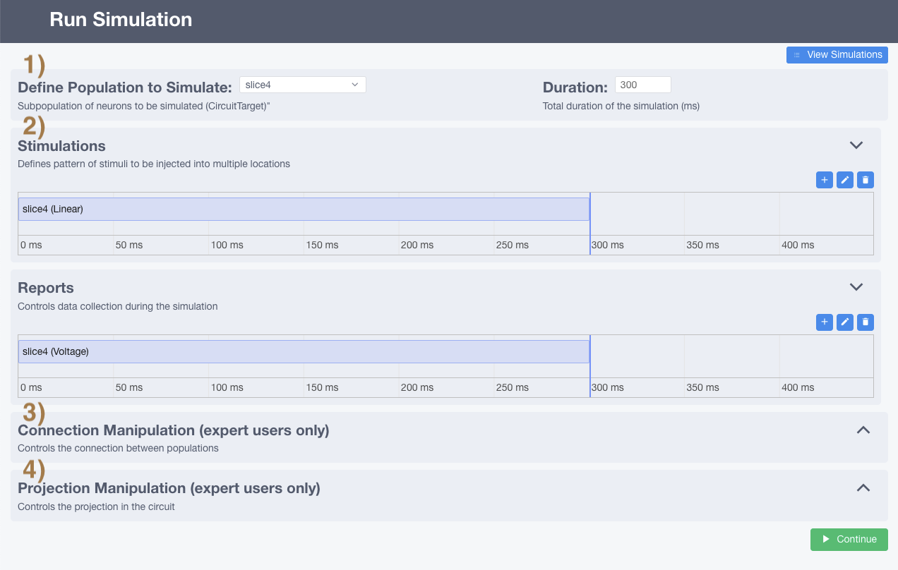
In the Section 1) you can configure:
Population: Population of cells to be loaded by the simulator.Duration: Time length of stimulus duration, given in milliseconds(ms)View Simulations: From here you can see all the history of simulations (explained in page View Simulations)
In the Section 2) you can configure:
Using the buttons you can
add,editorremovenew stimulus/report (You can also double-click on the timeline to add or edit)Stimulationsconfiguration:
Population: Name of a population to receive the stimulation
Delay: Time when the stimulus commences, given in milliseconds (ms)
Duration: Time length of stimulus duration, given in milliseconds (ms)
Pattern: Type of stimulus to inject
AmpStart: The amount of current initially injected when the stimulus activates (nA)
AmpEnd: The final current when a stimulus concludes. Used by Linear (nA)
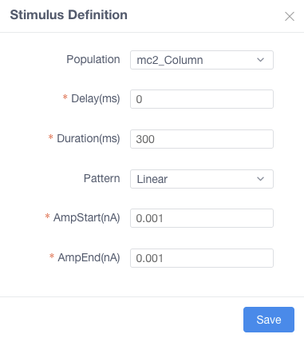
Reports
Population: Defines the population from where the data will be reported.
StartTime: Time to start reporting (ms)
EndTime: Time to stop reporting (ms)
Compartments: Which compartment(s) to report [Soma = compartment, Soma + Dendrites = AllCompartments]
ReportOn: What to report [Voltage, Calcium Concentration, Current Summation (for LFP)]
dt: The frequency of reporting in milliseconds (ms)
Format: Defines the report output format [Binary (.bbp), ASCII, HDF5]
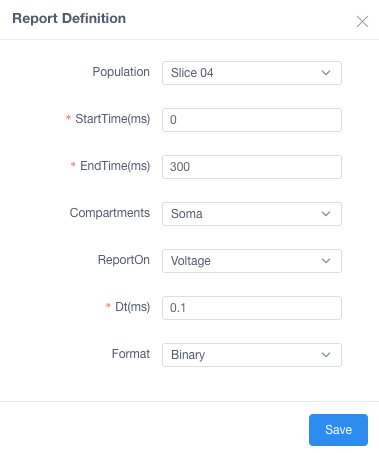
In the Section 3) you can modify the connection between populations on the circuit specifying:
Source: This target defines presynaptic cells
Destination: This target defines postsynaptic cells
Delay (ms): A delay after which the modifications are applied
Weight: A scaling factor to adjust the synaptic strength (default = 1)
MinisFreq: The Poisson mean rate for spontaneous synaptic activity
Synapse Configuration: Snippets of hoc code to manipulate additional synaptic parameters
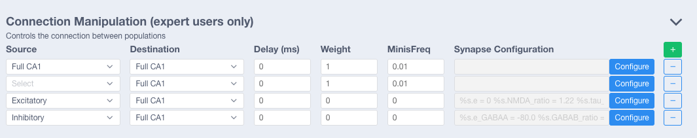
If you want to modify a synpase just click configure and a pop-up will appear
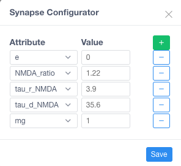
In the Section 4) you can modify the projection going to the circuit
Weight: A scaling factor to adjust the synaptic strength (default = 1)
Minis Projection: Generate inputs based on spontaneous synaptic activity - Frequency (Hz): Frequency of the spontaneous synaptic activity
Spike Replay Projection: Generate inputs based on a given distribution
Target: From which cells the projection is coming
Frequency (Hz): The input mean rate
Stimulus Type: Type of distribution (default = Poisson)
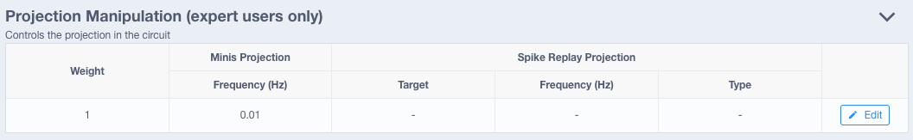
If you want to modify a projection just click configure and a pop-up will appear
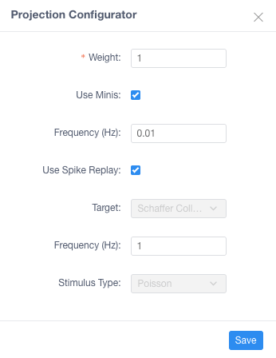
Launching a simulation will open a form to configure the parameters before executing the jobs on the supercomputer
Title: The title of the job
Computer: Which supercomputer will run the simulation.
Project: (optional) If you want to specify under which project the simulation should be run
Nodes: The amount of nodes that will be allocated and used for the simulation
Run Time: The maximum time before timeout (in seconds).
CPUs Per Node: Number of CPUs that are going to be used for the simulation.
Total Processors: The total amount (nodes * cpus).
Preview BlueConfig: This will open a new tab with the complete configuration that is going to be sent
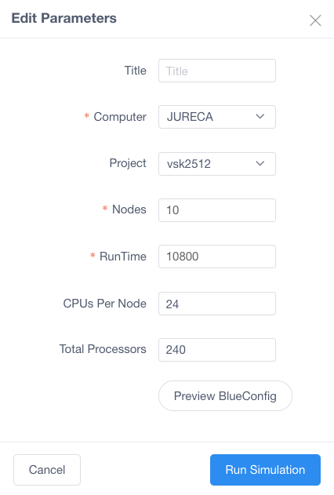
View Simulations
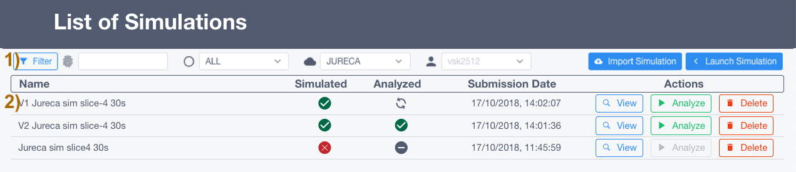
In the Section 1) you are able to:
Filterby Title, Status, Supercomputer, ProjectImport Simulationproviding the full path to simulation folder on that HPCLaunch Simulation: this goes back to Configure and Launch simuation page
In the Section 2) you are able to:
Check statusof Simulation and Analysis steps:ready
queue
aborted
failed
Viewthe details page of the simulation.Analysewill open a form to configure the parameters before executing the analysis on the supercomputerTitle: Title of the job
Report: Report created by the simulation
- Raster / Traces: (Basic Analysis) Type of analysis to run
Whole Population: Population cells
Cells GIDs: Specify single GID and/or ranges of GIDs
Random Cells: Amount of random cells (from the report) to analyze
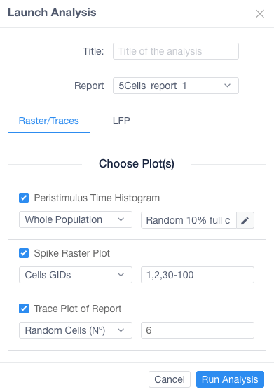
- LFP: (Advanced Analysis) Type of analysis to run
Population: Population cells
Plots: Type of plots to get as a result of the LFP calculation
Duration: Start and End duration of the LFP calculation
Points: Either write or upload a file with points to calculate LFP
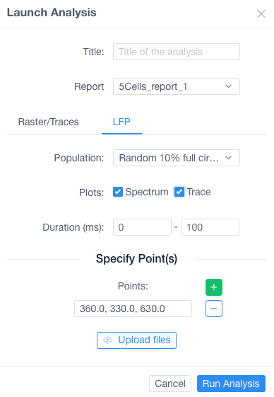
Deletethe simulation
Simulation Details
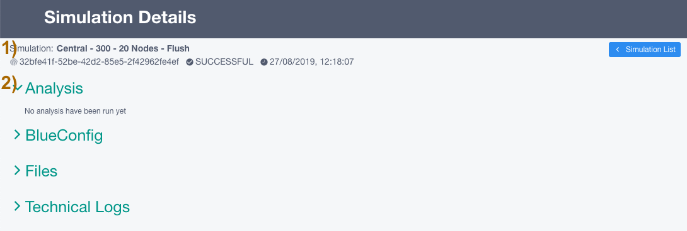
In the Section 1) you are able to see:
Simulationwith the following informationName
ID
Status
Submission Date
In the Section 2) you are able to see:
Analysis: Plots of the analysis will be shown here
BlueConfig: The configuration that was sent to run the simulation
Files: List of files that the simulation produced
Technical Logs:
Unicore Logs
Stderr: Logs of the simulation
Stdout: Output information of the simulation
The Analysis section shows the different analyses the user has run
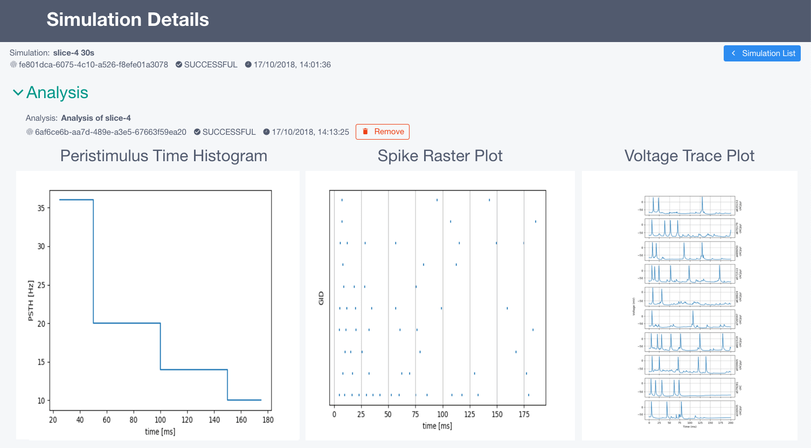